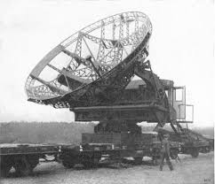
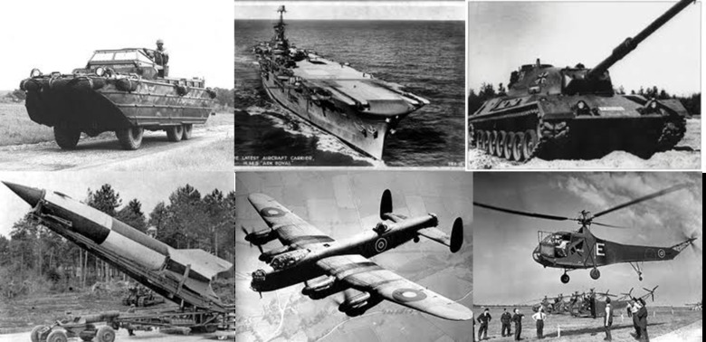
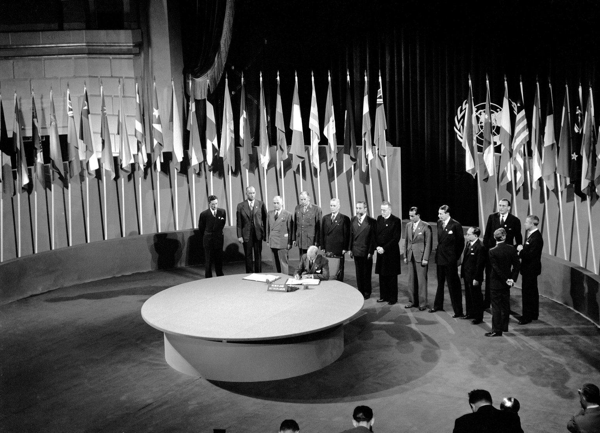

Overview of World War II
World War II is still one of the most transformative and complicated events in history. The war spanned from 1939 to 1945, the war involved a total of 40 countries and has changed global politics, the global economy and communities all around the world. This website will dive into different facets of the war- all the way from the most important battles that were fought on multiple fronts to how the civilian population was affected.
At its heart the second world war was a fight for ideologies and national ambitions, with the Axis powers who were led by Nazi Germany, Fascist Italy and Imperial Japan who were all looking to expand their influence and territory. On the other side we have the Allied powers who were made up of the Soviet Union, USA, the UK and China who all came together in hopes of stopping the Axis power's spread of totalitarianism and to keep global stability.

The war was fought across multiple continents. Very fierce battles were fought in Europe like the invasion of Poland, the liberation campaigns of 1944 and the Battle of Britain that all changed the shape of the continent forever. Island hopping campaigns and naval clashes in the Pacific ocean like the Battle of Midway were very very important in turning the tide against the expansion of Japan
Technological innovations played a key role throughout World War II with new inventions like the radar, new and improved aircraft designs and tanks very much changed the outcome of the most important battles during the war.
 On the diplomatic side, the aftermath of the war caused a lot of major changes all around the world. The devastation caused by the war caused the creation of the United Nations in hopes of preventing future world wars along with fostering cooperation among all nations.
Here is a video showing the hard conditions that the soldiers had to fight in for our freedom. Please enjoy the video and remember all of those who died for us.
By reading the information provided in the website you will gain information about both strategic military operations and the stories of what people had to go through during World War II
This website was not only created to provide the user with information about World War II but it also provides some thoughtful reflections on how World War II affected societies all around the world. We ask the user to go through all of the pages in this website so they can learn more about some of the most important battles affected the outcome of the war and also how citizens living on the home front had to sacrifice to keep the war going and how gender roles changed during the war and laying the foundation for today's gender equality.